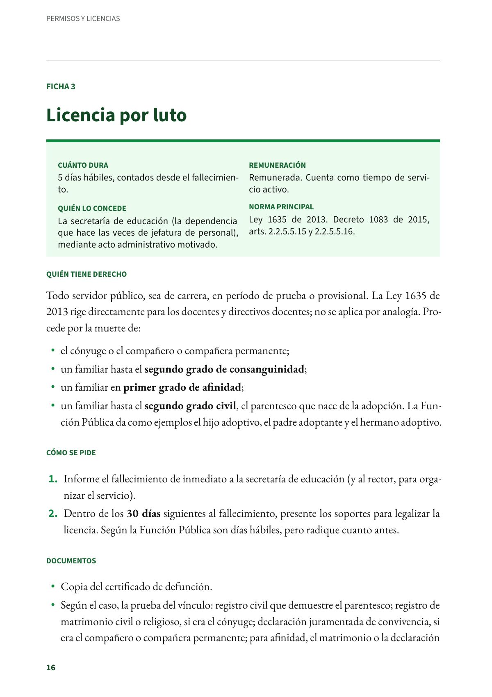
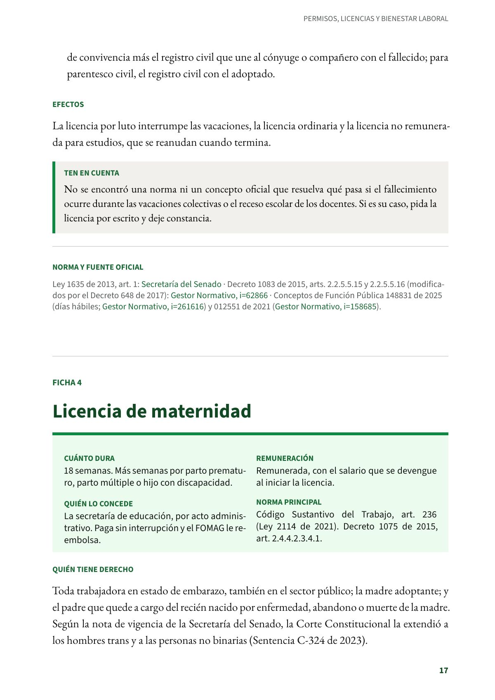

Licencia por luto
Cinco días hábiles remunerados por la muerte del cónyuge o de un familiar cercano, con 30 días para presentar los soportes.
PDF · 2 págs. · 44 KBEn resumen
- Cuánto dura: 5 días hábiles, contados desde el fallecimiento.
- Remuneración: Remunerada. Cuenta como tiempo de servicio activo.
- Quién lo concede: La secretaría de educación (la dependencia que hace las veces de jefatura de personal), mediante acto administrativo motivado.
- Norma principal: Ley 1635 de 2013. Decreto 1083 de 2015, arts. 2.2.5.5.15 y 2.2.5.5.16.
Quién tiene derecho
Todo servidor público, sea de carrera, en período de prueba o provisional. La Ley 1635 de 2013 rige directamente para los docentes y directivos docentes; no se aplica por analogía. Procede por la muerte de:
- el cónyuge o el compañero o compañera permanente;
- un familiar hasta el segundo grado de consanguinidad;
- un familiar en primer grado de afinidad;
- un familiar hasta el segundo grado civil, el parentesco que nace de la adopción. La Función Pública da como ejemplos el hijo adoptivo, el padre adoptante y el hermano adoptivo.
Cómo se pide
- Informe el fallecimiento de inmediato a la secretaría de educación (y al rector, para organizar el servicio).
- Dentro de los 30 días siguientes al fallecimiento, presente los soportes para legalizar la licencia. Según la Función Pública son días hábiles, pero radique cuanto antes.
Documentos
- Copia del certificado de defunción.
- Según el caso, la prueba del vínculo: registro civil que demuestre el parentesco; registro de matrimonio civil o religioso, si era el cónyuge; declaración juramentada de convivencia, si era el compañero o compañera permanente; para afinidad, el matrimonio o la declaración de convivencia más el registro civil que une al cónyuge o compañero con el fallecido; para parentesco civil, el registro civil con el adoptado.
Efectos
La licencia por luto interrumpe las vacaciones, la licencia ordinaria y la licencia no remunerada para estudios, que se reanudan cuando termina.
Ten en cuenta
No se encontró una norma ni un concepto oficial que resuelva qué pasa si el fallecimiento ocurre durante las vacaciones colectivas o el receso escolar de los docentes. Si es su caso, pida la licencia por escrito y deje constancia.
Norma y fuente oficial
Ley 1635 de 2013, art. 1: Secretaría del Senado · Decreto 1083 de 2015, arts. 2.2.5.5.15 y 2.2.5.5.16 (modificados por el Decreto 648 de 2017): Gestor Normativo · Conceptos de Función Pública 148831 de 2025 (días hábiles; Gestor Normativo) y 012551 de 2021 (Gestor Normativo).
Así se ve en el libro
2 páginas
